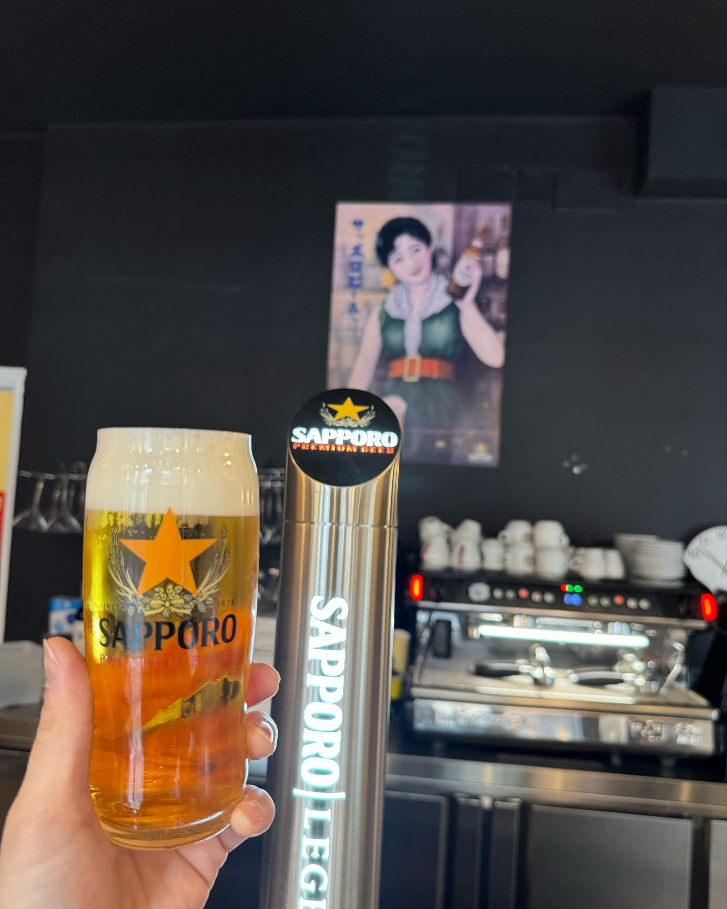

{% extends "HTML/header.html" %}
{% block content %}
<body>
    <div class="header_middle mainsite">
        <div class="mainvisual">
            <ul id="photos">
                <li class="photo"></li>
                <li class="photo"></li>
                <li class="photo"></li>
                <li class="photo"></li>
                <li class="photo"></li>
                <li class="photo"></li>
            </ul>
        </div>
    </div>
        <p class="sagami_description">Sagami,el comedor de los japoneses.<br>Sagami, el comedor, ahora también es para españoles.</p>
    </div>
</body>
{% endblock %}

{% block script %}
<script src="https://ajax.googleapis.com/ajax/libs/jquery/3.3.1/jquery.min.js"></script>
<script>

    $(document).ready(function () {
        var $photos = $('#photos'),
            $lis = $('#photos li');

        var li_count = $lis.length;
        var li_width = $lis.outerWidth(true);  // リスト項目の幅 + マージンを考慮

        // 画像リストの全体幅を設定
        $photos.css('width', (li_width * li_count) + 'px');

        // 永続的にスライドさせる
        setInterval(function () {
            // アニメーションで左にスライドさせる
            $photos.animate({
                marginLeft: -li_width  // リスト全体を左にスライド
            }, 3500, 'linear', function () {
                // スライド終了後、リストの最初の項目を最後に移動
                $photos.css('margin-left', '0').find('li:first').appendTo($photos);
            });
        }, 3500);  // アニメーションの間隔（スライドとスライドの間）
    });
</script>
{% endblock %}

</html>
